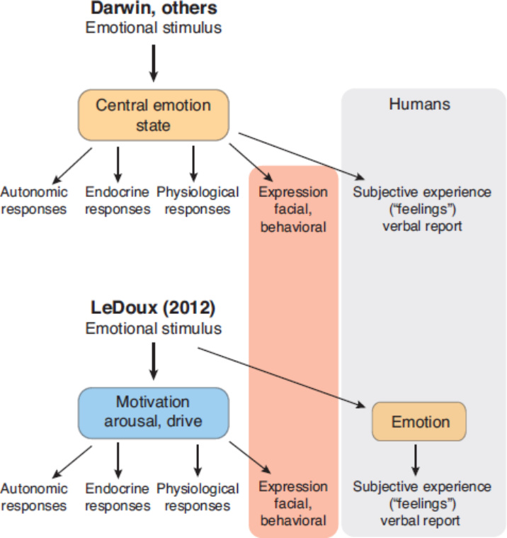

Chương 5 — Sinh Học Thần Kinh Của Cảm Xúc Ở Động Vật: Những Xem Xét Chung
Để nghiên cứu sinh học thần kinh của cảm xúc ở động vật, chúng ta phải nhất trí rằng động vật có "các cảm xúc," theo cách dùng thuật ngữ của chúng tôi. Như chúng ta đã lưu ý ở các chương trước, một số nhà nghiên cứu, chẳng hạn như nhà thần kinh học Joseph LeDoux, đã lập luận gần đây rằng thuật ngữ cảm xúc chỉ nên được dùng theo nghĩa thông thường để chỉ các hiện tượng chủ quan ("các cảm giác"), vốn chỉ có thể được nghiên cứu ở con người (LeDoux 2012). Động vật, theo ông, hữu ích cho việc nghiên cứu các trạng thái nội tại khác có liên quan đến cảm xúc, chẳng hạn như "sự hưng phấn" hay "động lực" (sẽ nói thêm về chúng sau), nhưng không hữu ích cho việc nghiên cứu "các cảm xúc" theo nghĩa mà ông hiện đang dùng. Nhưng nếu chúng ta giới hạn cách dùng khoa học của từ cảm xúc theo nghĩa thông thường (phi khoa học) của nó, thì chúng ta phải cân nhắc tác động của lựa chọn ngữ nghĩa đó đối với việc hiểu và điều tra chủ đề này trong giới khoa học chuyên nghiệp (cả chuyên gia lẫn không chuyên gia), sinh viên và cả công chúng. "Cảm xúc" thường được xem một cách phổ biến là khác biệt với cả các quá trình "robot"—những phản xạ được lập trình sẵn—lẫn các quá trình "nhận thức"—tư duy, phân tích, ra quyết định, và những thứ tương tự. Dù việc giới hạn cách dùng khoa học của thuật ngữ cảm xúc vào việc nghiên cứu con người không ngụ ý về mặt logic rằng động vật thiếu cảm xúc, nó vẫn có thể khiến nhiều người đi đến kết luận đó—và qua đó tạo ra ấn tượng rằng động vật chỉ là những cỗ robot. Ấn tượng đó sẽ là sai lầm, và có thể cản trở tiến bộ bằng cách làm giảm nguồn kinh phí nghiên cứu chính phủ cho các nghiên cứu về cảm xúc ở động vật (Fanselow và Pennington 2018). Điều đó sẽ giới hạn rất nhiều khả năng của chúng ta trong việc hiểu cảm xúc và áp dụng những lợi ích của sự hiểu biết này vào điều trị các rối loạn tâm thần và tâm lý—không chỉ ở con người mà còn ở động vật. Như sẽ được mô tả thêm ở phần sau, thần kinh học hiện đại đã phát triển một kho vũ khí các
phương pháp thực nghiệm mạnh mẽ để nghiên cứu gần như mọi kiểu chức năng tinh thần, bao gồm cảm giác, tri giác, ra quyết định, định hướng không gian, học tập, trí nhớ, sự chú ý và phối hợp vận động.
Quan trọng là, các phương pháp thực nghiệm này, chẳng hạn như quang di truyền học và chụp ảnh canxi, (được nêu bật trong các hộp 5.1–5.4) không thể áp dụng ở con người vì cả lý do đạo đức lẫn thực tiễn (hộp 5.5). Tại sao cảm xúc lại đặc biệt đến vậy trong các chức năng não, đến mức sự hiểu biết về nó phải bị suy yếu bởi việc bị cấm tiếp cận các phương pháp thực nghiệm vốn là nền tảng để giải quyết gần như mọi vấn đề khác trong thần kinh học?
Như chúng ta đã lưu ý trước đó, các nhà khoa học thường dùng ngôn ngữ có định nghĩa kỹ thuật khác với cách dùng thông thường của nó. Vì vậy, chúng tôi (Anderson và Adolphs 2014), giống như Darwin (Darwin 1872/1965) và nhiều người khác, dùng thuật ngữ cảm xúc để chỉ một lớp các trạng thái nội tại của não, vốn được động vật và con người biểu hiện bằng nhiều cách có thể đo được, bao gồm biểu hiện trên khuôn mặt, hành vi, các thay đổi sinh lý, và (ở con người và có thể ở một số động vật) các cảm giác chủ quan (xem hình 2.2). Bằng cách định nghĩa các cảm xúc như các trạng thái nội tại của não, chúng ta có thể nghiên cứu sự hiện thực hóa sinh học thần kinh của những trạng thái đó ở động vật, mà không phải bận tâm đến câu hỏi liệu động vật có hay không có các cảm giác chủ quan, điều mà chúng ta có thể tiếp tục nghiên cứu ở con người (Dolan 2002; Damasio và Carvalho 2013). Chúng ta đã nhấn mạnh cách dùng khoa học này của từ cảm xúc ở chương 2, nhưng ở đây chúng tôi nhắc lại vấn đề, vì điều hoàn toàn thiết yếu là phải ghi nhớ điều này khi bạn đọc phần còn lại của cuốn sách.
Các nhà khoa học thường giới hạn việc nghiên cứu các hiện tượng tự nhiên vào những thứ họ có thể đo được, nhưng những phép đo đó có thể trực tiếp hơn hay kém. Hiện tại, chúng ta chưa có một "máy đo cảm xúc": một cách để đo trực tiếp các trạng thái cảm xúc ở người hay động vật giống như cách chúng ta đo nhiệt độ bằng nhiệt kế. Thay vào đó, chúng ta phải suy ra sự tồn tại của chúng từ các phép đo các biến hành vi hay sinh lý biểu hiện những trạng thái đó, từ phản ứng của các biến này đối với các nhiễu loạn thực nghiệm, và từ một số giả định nền tảng. Điều đó không có gì lạ trong khoa học; các nhà vật lý hạt suy ra sự tồn tại của các hạt và lực hạ nguyên tử bằng cách đo những hệ quả của các thí nghiệm bắn phá nguyên tử, thông qua một chuỗi suy diễn rất phức tạp. Tương tự, các nhà khoa học cảm xúc suy ra sự hiện diện của một trạng thái sợ hãi bằng
cách đo những thay đổi được phối hợp của các biến tự chủ (nhịp tim, huyết áp), các biến nội tiết (mức hormone gây stress trong máu), và các biến hành vi (đứng hình hay bỏ chạy, bài tiết, v.v.), đáp ứng với một tình huống cụ thể, rồi cố rút ra lời giải thích tiết kiệm nhất từ những điều đó, chẳng hạn như suy ra một trạng thái sợ hãi. Tất nhiên, không biến nào trong số các biến đo được này, khi xét riêng lẻ, nhất thiết chỉ ra một trạng thái cảm xúc tiềm ẩn. Nhưng vì các biến đo được này và các biến khác cùng xuất hiện, một cách được phối hợp, cùng với sợ hãi ở con người, chúng ta cảm thấy thoải mái khi suy ra sự tồn tại của một trạng thái cảm xúc nội tại tương tự khi chúng cùng xuất hiện ở một con vật, đặc biệt là một con vật có hệ thần kinh được tổ chức tương tự như của chúng ta (Davis 1992). Những tiêu chuẩn truyền thống này trở nên khó áp dụng hơn đối với các sinh vật xa về mặt phát sinh loài, chẳng hạn như côn trùng, vốn có hành vi, sinh lý và giải phẫu não khác với chúng ta. Vì lý do đó, chúng ta đã nỗ lực xác định những đặc điểm tổng quát hơn của sự biểu hiện các trạng thái cảm xúc (chương 3) có thể dùng để nhận diện và nghiên cứu các trường hợp cảm xúc, hay "các nguyên thủy cảm xúc," trong những sinh vật mà các cấu trúc và hành vi não tương đồng với người không rõ ràng.
Như chúng ta đã nhấn mạnh ở trên và ở chương 2, chúng tôi tin rằng điều hết sức quan trọng là phải phân biệt giữa các trạng thái cảm xúc và các trải nghiệm có ý thức về những cảm xúc đó ("các cảm giác"). Chúng ta có thể nghiên cứu các cảm giác ở con người, nhưng hiện tại chúng ta chưa có bất kỳ tiêu chuẩn nào được chấp nhận chung để điều tra các cảm giác ở động vật; do đó, chúng ta sẽ không thảo luận về các cảm giác của động vật trong cuốn sách này. Những cân nhắc này không nhằm gạt bỏ câu hỏi về các cảm giác chủ quan ở động vật. Câu hỏi đó là một câu hỏi quan trọng và đầy rắc rối, vì những hệ quả của nó đối với tính "độc nhất" của con người, và vì những cân nhắc về đạo đức. Trong tương lai, có thể sẽ khả thi để giải quyết câu hỏi này một cách khoa học; quả thật, một số người khác (nổi bật nhất là nhà sinh học thần kinh quá cố Jaak Panksepp) đã lập luận rằng bằng chứng hiện có ủng hộ ý tưởng rằng các trạng thái được gợi ra bằng kích thích điện não ở động vật phản ánh các cảm giác cảm xúc (Panksepp 2011b). Mặc dù cuộc tranh luận về các cảm giác chủ quan ở động vật dường như khó có thể được giải quyết sớm, vẫn có rất nhiều điều có thể học được về cách các trạng thái cảm xúc nội tại được hiện thực hóa trong não bằng cách nghiên cứu động vật. Cũng theo cách đó, trong năm mươi năm qua các nhà thần kinh học đã học được rất nhiều về thị giác từ các nghiên cứu trên động vật, mà không cần cố giải thích trải nghiệm chủ quan (các "qualia") của chúng ta khi nhìn thấy màu đỏ, chẳng hạn. Từ góc nhìn này, cách tiếp cận
của chúng ta đối với sinh học thần kinh của các trạng thái cảm xúc nội tại đang chậm hơn khoảng năm mươi năm so với các nghiên cứu về thị giác của chúng ta.
Còn một điểm quan trọng cuối cùng cần nêu liên quan đến câu hỏi liệu động vật có trải nghiệm có ý thức về cảm xúc hay không, một điểm mà chúng ta sẽ quay lại ở các chương sau. Đó là: có thể một ngày nào đó sẽ thu được bằng chứng thuyết phục về các trải nghiệm chủ quan từ dữ liệu khác với các báo cáo bằng lời. Chẳng hạn, nhà thần kinh học Adrian Owen đã có thể thu được bằng chứng mạnh rằng những bệnh nhân người từng bị cho là hôn mê thực ra có các trải nghiệm có ý thức—bằng cách chụp ảnh não của họ bằng chụp cộng hưởng từ chức năng (fMRI) và so sánh sự kích hoạt với của những người khỏe mạnh (Owen et al. 2006). Tất nhiên, điều này dựa trên một số giả định, chẳng hạn rằng não của mọi người khá giống nhau, và rằng fMRI là một phương pháp đủ mức phân giải tinh. Nhưng dù sao: tại sao các báo cáo bằng lời lại phải là những chỉ báo đáng tin cậy hơn dữ liệu chụp ảnh não về các trải nghiệm có ý thức, một khi chúng ta đã biết đủ nhiều về cách não hoạt động? Nếu chúng ta tìm thấy các chỉ dấu hoạt động não tương quan rất đáng tin cậy với các trải nghiệm có ý thức về cảm xúc, chúng ta chắc chắn có thể dùng những chỉ dấu đó làm bằng chứng cho các trải nghiệm có ý thức về cảm xúc—ngay cả khi thiếu bất kỳ lời giải thích cơ chế nào. Chúng ta vẫn có thể không hiểu tại sao kiểu hoạt động não cụ thể đó lại đi cùng với các trải nghiệm có ý thức về cảm xúc, nhưng nếu tương quan đó đáng tin cậy, cái trước có thể được dùng để suy ra cái sau. Xét cho cùng, chúng ta cũng không hiểu tại sao những báo cáo bằng lời cụ thể lại đi cùng với các trải nghiệm có ý thức về cảm xúc! Khả năng này nên được ghi nhớ khi chúng ta mô tả sinh học thần kinh của cảm xúc ở động vật: mặc dù động vật sẽ không bao giờ có thể nói chuyện với chúng ta, ít nhất vẫn có thể tưởng tượng rằng chúng ta sẽ có những chữ ký não của các trải nghiệm cảm xúc. Khi biện hộ cho một sự tách biệt có chủ chương giữa việc nghiên cứu các trạng thái cảm xúc và việc nghiên cứu các trải nghiệm có ý thức về cảm xúc (như chúng tôi đã làm ở cuối chương 2), chúng tôi không muốn ngụ ý rằng việc nghiên cứu các trải nghiệm của động vật nên bị cấm vĩnh viễn. Chúng ta chỉ cần tìm ra các thước đo phụ thuộc phù hợp.
Tại Sao Chúng Ta Cần Các Nghiên Cứu Về Sinh Học Thần Kinh Của Cảm Xúc Ở Động Vật?
Xuất phát từ những khó khăn trong việc nghiên cứu các trải nghiệm có ý thức về cảm xúc ở động vật, bạn có thể hỏi "tại sao phải bận tâm đến các nghiên cứu trên động vật?" Tại sao không
giới hạn việc nghiên cứu cảm xúc của chúng ta vào con người, nơi không có bất đồng nào về việc liệu chúng ta, với tư cách một loài, có trải nghiệm các cảm giác chủ quan hay không? Như chúng ta sẽ thấy ở các chương 8 và 9, chắc chắn có rất nhiều điều có thể học được về thần kinh học cảm xúc ở con người bằng cách kết hợp các nghiên cứu tâm lý học và chụp ảnh não một cách định lượng chặt chẽ. Trong một số trường hợp, chúng ta thực sự có thể dự đoán trải nghiệm cảm xúc từ các kiểu hoạt động não đo được. Nếu chúng ta có thể đưa ra những dự đoán như vậy bằng cách nhìn vào não, điều đó có phải nói rằng chúng ta đã hiểu cảm xúc đủ tốt chỉ bằng cách điều tra não người?
Đáng tiếc là không, và những lý do phụ thuộc phần lớn vào sự phân biệt giữa tương quan và nhân quả, một sự phân biệt mà chúng tôi đã làm rõ ở chương 4. Quay lại một phép so sánh đơn giản đã dùng trước đó trong cuốn sách này, chúng ta có thể dự đoán tốc độ của một chiếc ô tô bằng cách đo số đọc trên đồng hồ tốc độ của nó. Nhưng điều đó không có nghĩa là đồng hồ tốc độ là nguyên nhân làm chiếc xe di chuyển. Quả thật, nó không phải là bất kỳ bộ phận nào của cơ chế làm chiếc xe chạy; nếu bạn tháo đồng hồ tốc độ ra, tốc độ của xe không đổi một chút nào. Nhưng đồng hồ tốc độ vẫn có giá trị dự đoán mạnh. Để hiểu cảm xúc, chúng ta cần vượt ra ngoài dự đoán và tương quan, tiến tới nhân quả; chúng ta cần tìm ra động cơ trong chiếc xe và tìm hiểu cách nó hoạt động. Để làm điều đó, chúng ta cần tháo rời nó, từng bộ phận một, nhằm hiểu chức năng của từng cấu thành và giải thích cách chúng hoạt động cùng nhau. Hiện chưa thể làm điều đó cho các trải nghiệm có ý thức ở động vật, và rất khó làm điều đó cho bất kỳ khía cạnh nào của cảm xúc ở con người, nhưng có thể làm được cho việc điều tra các trạng thái cảm xúc (không phải trải nghiệm có ý thức của chúng) trong các nghiên cứu trên động vật.
Quá trình hiểu theo cơ chế (nhân quả) chức năng não này đòi hỏi phải gây nhiễu loạn, ngoài việc quan sát định lượng cẩn thận. Gây nhiễu loạn nghĩa là đi vào não (thực hiện các thí nghiệm xâm lấn) để cố ý và đặc hiệu thao tác hoạt động của các gen, nơ-ron hay mạch thần kinh của nó, và đo những hệ quả của các thao tác đó. Ở con người, những thí nghiệm xâm lấn như vậy nói chung không thể được thực hiện một cách hệ thống, với độ chính xác và khả năng tái lập cần thiết; chúng bị giới hạn ở những tai nạn hiếm không kiểm soát được (chẳng hạn trường hợp Phineas Gage, mà chúng ta sẽ bàn ở chương 8), ở các thủ tục bị đạo đức y học ràng buộc chặt chẽ bởi lý do chữa bệnh hay trị liệu (chẳng hạn kích thích
qua điện cực sâu), hay ở các phương pháp không xâm lấn nhưng quá thô (chẳng hạn kích thích từ xuyên sọ).
Một lý do cụ thể hơn khiến chúng ta cần các nghiên cứu cảm xúc trên động vật là chúng ta có thể áp dụng các kỹ thuật mới mạnh mẽ, chẳng hạn quang di truyền học hay dược di truyền học (hộp 5.1) và chụp ảnh quang học hoạt động nơ-ron (hộp 5.2), theo cách nhắm vào các kiểu tế bào nơ-ron được xác định bằng gen (hộp 5.3). Những phương pháp mới phát triển gần đây này, vốn mang lại mức độ phân giải tế bào và thời gian cao hơn nhiều so với fMRI, tổn thương hay kích thích điện, chưa thể áp dụng ở người (xem hộp 5.4); hơn nữa, dù có thể, việc áp dụng chúng cũng sẽ bị giới hạn bởi tính cần thiết về y học. Các công cụ có thể áp dụng ở động vật, được trình bày chi tiết trong các hộp để tiện tra cứu, nêu bật một mức độ chính xác và phân biệt quan trọng mà hình 4.2 trước đó của chúng tôi khó truyền đạt rõ.
Trung tâm của các phương pháp luận này là khái niệm các kiểu tế bào nơ-ron (hộp 5.3). Nơ-ron không chỉ có một "hương vị" duy nhất; có nhiều kiểu, hay lớp, khác nhau (Zeng và Sanes 2017). Sự phân biệt đơn giản nhất là giữa nơ-ron kích thích và nơ-ron ức chế. Tuy nhiên, trong mỗi hạng mục này lại có nhiều phân nhóm; ví dụ, một nghiên cứu gần đây cho thấy vỏ não thị giác chính (vùng V1) ở chuột nhắt chứa ít nhất hai mươi lăm phân nhóm nơ-ron kích thích khác nhau và số lượng tương đương các phân nhóm nơ-ron ức chế; tổng số kiểu tế bào chỉ riêng vùng vỏ này có thể vượt quá một trăm. Các nơ-ron cùng kiểu thường biểu hiện những bộ gen tương tự và do đó có các phổ thụ thể và kênh ion tương tự; chúng cũng có các kiểu kết nối tương tự với các kiểu tế bào khác. Vì vậy, rất có thể những phân nhóm nơ-ron này là một dạng đơn vị chức năng: các nơ-ron của một phân nhóm cụ thể đều "làm cùng một việc." Đây là lý do tại sao việc thao tác một quần thể nơ-ron được xác định như vậy trong một vùng nhất định, chẳng hạn hạch hạnh nhân, có thể gây ra một kiểu hiệu ứng lên một cảm xúc (như chúng ta sẽ mô tả ở chương 6), trong khi thao tác một quần thể nơ-ron khác trong cùng vùng não đó lại có thể gây hiệu ứng ngược chiều. Các kiểu nơ-ron khác nhau do đó có thể cấu thành đơn vị chức năng nhỏ nhất có ý nghĩa của tổ chức tế bào trong não, và có thể thể hiện sự bảo tồn đáng kể giữa các não của các loài khác nhau. Chúng ta chưa biết tổng số các kiểu tế bào khác nhau trong não có vú; các ước tính hiện nay vào hàng nghìn (ngay cả võng mạc cũng chứa khoảng 60 kiểu tế bào khác nhau). Nhưng đó vẫn ít hơn nhiều so với
tổng số khoảng 80 tỷ nơ-ron trong não người. Theo một cách nào đó, đây là tin tốt cho một ngành thần kinh học cảm xúc.
Quan trọng là, các kiểu nơ-ron khác nhau thường đan xen lẫn trong một vùng não nhất định, như muối và tiêu—chúng không nhất thiết được đóng gói cùng nhau trong một cấu trúc hay nhân cụ thể dễ nhận diện (lưu ý: thuật ngữ nhân được dùng ở đây theo nghĩa giải phẫu thần kinh để chỉ một cấu trúc não, không phải theo nghĩa sinh học tế bào để chỉ bào quan chứa các nhiễm sắc thể). Để đo chính xác các kiểu hoạt động nơ-ron trong não, cần gán hoạt động cho các kiểu tế bào cụ thể, điều này đòi hỏi các công cụ mà chúng ta thảo luận trong các hộp 5.1–5.3. Vì vậy, ngay cả khi fMRI có thể phân giải từng nơ-ron riêng lẻ (điều mà nó không thể), nó cũng không thể phân biệt chúng với nhau; đó là một phương pháp có độ phân giải thấp và "đơn sắc." (Cũng đơn sắc là phân tích c-fos thông thường, hay các ghi nhận bằng điện cực ngoài tế bào, vốn tuy có độ phân giải đơn tế bào.) Ngược lại, dùng di truyền học để biểu hiện các cảm biến canxi một cách chọn lọc trong một lớp nơ-ron cụ thể khiến việc trực quan hóa hoạt động nơ-ron với độ phân giải đơn tế bào trở nên khả thi, và cho phép trực quan hóa chọn lọc hoạt động của một kiểu (hay các kiểu) nơ-ron cụ thể (hộp 5.2). Như chúng ta sẽ thấy ở chương 6, việc áp dụng các kỹ thuật này ở chuột nhắt đã dẫn đến việc thay thế quan điểm cổ điển về các mạng nơ-ron như những kết nối giữa các cấu trúc giải phẫu (ví dụ, giữa "hạch hạnh nhân" và "vỏ não trước trán") bằng một quan điểm dựa trên các kết nối giữa các kiểu tế bào khác nhau, trong đó một cấu trúc nhất định có thể chứa nhiều kiểu tế bào với các kết nối giải phẫu khác nhau.
Sau cùng, mức độ hiểu theo cơ chế mà các thí nghiệm trên động vật mang lại sẽ rất quan trọng cho việc phát triển các liệu pháp mới cho các rối loạn tâm thần—một nhiệm vụ cực kỳ quan trọng xét gánh nặng khổng lồ mà các rối loạn này đặt lên xã hội, và xét thực tế rằng ngành dược phẩm đã phần lớn từ bỏ việc tìm kiếm các thuốc tâm thần mới (Griebel và Holsboer 2012). Theo góc nhìn của chúng tôi, việc các nghiên cứu cảm xúc trên động vật trong nửa thế kỷ qua chưa dẫn đến một thuốc tâm thần mới nào không phải là, như một số người đã lập luận (LeDoux 2015), vì động vật là đối tượng kém để kiểm thử các thuốc ảnh hưởng đến các trạng thái cảm xúc; mà là vì cảm xúc là một chức năng não cực kỳ phức tạp, và trước đây chúng ta chưa có các công cụ để nghiên cứu nó với mức độ tinh vi và sâu cần thiết. Lấy ví dụ: những thuốc chống ung thư mới
đang có vẻ đầy hứa hẹn phản ánh hàng thập kỷ nghiên cứu về các cơ chế nền tảng chi tiết của sự phân chia tế bào, tế bào chết, và chức năng miễn dịch ở động vật, bất chấp thực tế rằng động vật có sinh lý và phản ứng miễn dịch khác với con người. Tại sao việc hiểu cảm xúc lại phải khác đi? Chúng ta sẽ quay lại điểm này ở cuối chương.
Hộp 5.1. Quang Di Truyền Học Và Dược Di Truyền Học.
Những thuật ngữ này chỉ các phương pháp được phát triển để thao tác hoạt động của các phân nhóm nơ-ron được đánh dấu bằng gen trong một vùng não nhất định (xem hộp 5.3). Chúng được dùng phổ biến nhất ở những sinh vật mà việc chuyển gen qua dòng mầm là khả thi, bao gồm giun tròn C. elegans, ruồi giấm Drosophila, cá ngựa vằn zebrafish, và chuột nhắt. Việc áp dụng chúng vào các sinh vật khác như chuột cống, linh trưởng không phải người, và con người hiện còn hạn chế hơn (dù không phải là bất khả). Trong các phương pháp này, một gen mã hóa một kênh hay bơm ion nhạy sáng của vi sinh vật được thiết kế lại ("opsin," hay hiệu ứng tử quang di truyền), hay một thụ thể thuốc được thiết kế lại (hiệu ứng tử dược di truyền), được biểu hiện trong một phân nhóm nơ-ron mong muốn, bằng cách dùng các vector virus hay một gen chuyển di truyền được. Tùy vào kiểu hiệu ứng tử được dùng, các nơ-ron sau đó có thể được kích hoạt hay ức chế tùy ý ở con vật di chuyển tự do.
Các hiệu ứng tử quang di truyền được vận hành bằng ánh sáng có bước sóng cụ thể, đưa vào vùng não quan tâm qua một sợi quang cấy ghép. Các hiệu ứng tử dược di truyền, gọi là DREADD (xem thuật ngữ), được vận hành bằng cách dùng một thuốc gắn vào một thụ thể được thiết kế lại; thuốc này không kích hoạt bất kỳ thụ thể nội sinh nào, cũng như không có ligand nội sinh nào kích hoạt thụ thể tổng hợp này. Cả hai phương pháp đều cho phép các thao tác chức năng được nhắm vào một quần thể nơ-ron cụ thể, ngay cả khi các nơ-ron đó đan xen kiểu muối-trộn-tiêu với các lớp nơ-ron khác trong một vùng não nhất định. Tính đặc hiệu này rất quan trọng ở các vùng não như nhân trung tâm của hạch hạnh nhân vốn chứa các quần thể nơ-ron hỗn hợp gây ra các hiệu ứng ngược chiều lên cùng một hành vi: nếu cả hai quần thể đồng thời bị kích hoạt hay ức chế, ví dụ bằng các thuốc thông thường hay kích thích điện, các
thao tác có thể triệt tiêu lẫn nhau và không quan sát thấy hiệu ứng nào lên hành vi. Quan trọng là, khác với các tổn thương thông thường, các phương pháp này có thể đảo ngược nhanh chóng, dù trên các thang thời gian khác nhau: quang di truyền học cho phép kích hoạt hay ức chế hoạt động nơ-ron bằng các xung laser với độ phân giải mili-giây, trong khi dược di truyền học cho phép các thao tác đảo ngược trên thang thời gian hàng chục phút hay hàng giờ. Các cách tiếp cận này cũng có thể được áp dụng cùng nhau, ví dụ kích hoạt quang di truyền một quần thể nơ-ron, trong khi ức chế dược di truyền một mục tiêu giả định của các nơ-ron đó.
Việc áp dụng các phương pháp này đã có ảnh hưởng mang tính chuyển đổi đối với khả năng suy ra các quan hệ nhân quả giữa hoạt động của các nơ-ron cụ thể và các hành vi, bằng cách kiểm tra tính đủ của chúng (dùng các thao tác kích hoạt) hay tính cần thiết của chúng (dùng các thao tác ức chế; xem chương 4). Tuy nhiên, giống như bất kỳ phương pháp nào, các công cụ này cần được áp dụng một cách thận trọng, và các kết quả được diễn giải cẩn trọng. Như đã đề cập ở chương 4, việc chứng minh rằng kích hoạt quang di truyền một cấu trúc não hay quần thể tế bào nhất định là "đủ" để gợi ra một hành vi cụ thể không ngụ ý rằng nó làm điều đó một cách trực tiếp; có thể có nhiều phần tử mạch trung gian chưa biết. Hơn nữa, kích thích quang di truyền có thể áp đặt các kiểu hoạt động đồng bộ nhân tạo rất cao lên một quần thể nơ-ron, những kiểu mà các tế bào sẽ không bao giờ thể hiện trong điều kiện bình thường; điều này có thể tạo ra các hiệu ứng nhân tạo lên hành vi. Các phương pháp mới đang được phát triển để kích hoạt quang di truyền các nơ-ron theo cách được kiểm soát không-gian–thời gian tốt hơn, được thiết kế để bắt chước kiểu hoạt động bình thường của chúng. Cách tiếp cận này đòi hỏi tích hợp quang di truyền học với các phương pháp đo hoạt động của chính những nơ-ron đó, ví dụ bằng chụp ảnh canxi (hộp 5.2). Quang di truyền học và dược di truyền học cũng mang tiềm năng phát triển các liệu pháp mới cho các rối loạn tâm thần dựa trên thao tác nhắm đích các quần thể hay mạch nơ-ron cụ thể; về bản chất, một dạng đặc hiệu hơn của kích thích não sâu (DBS). Tuy nhiên, việc áp dụng các công cụ này ở người đối mặt với những rào cản quản lý đáng kể, một phần vì chúng đòi hỏi biểu hiện
các gen ngoại lai trong não (điều mà bản thân nó có thể gây ra các tác dụng phụ không mong muốn).
Hộp 5.2. Chụp Ảnh Quang Học Hoạt Động Nơ-Ron Bằng Các Chất Báo Cáo Được Mã Hóa Bởi Gen.
Đo hoạt động nơ-ron in vivo với độ phân giải đơn tế bào truyền thống được thực hiện bằng các ghi nhận điện sinh lý. Mặc dù đo các thế động tác ("các xung" điện thế mà nơ-ron dùng để giao tiếp với nhau) vẫn là tiêu chuẩn vàng cho các phép đo hoạt động nơ-ron, phương pháp này có một số hạn chế: (1) Nó thường được đo, ở các con vật nguyên vẹn di chuyển tự do, bằng các điện cực ngoài tế bào. Do đó, không có cách dễ dàng để nhuộm và nhận diện (các) tế bào sau khi ghi; hơn nữa, các thay đổi dưới ngưỡng của thế màng không thể được đo. (Những vấn đề này có thể được khắc phục bằng ghi trong tế bào hay ghi kẹp-màng, nhưng điều đó khó thực hiện hơn nhiều ở các con vật di chuyển tự do.) (2) Khó lấy mẫu cùng một tế bào qua nhiều ngày ghi, do sự bất ổn của vị trí điện cực. (3) Các nơ-ron được ghi phải được lấy mẫu với mật độ tương đối thấp để duy trì cách ly điện giữa các vị trí ghi; do đó, đo hoạt động của các tập hợp mật độ cao là thách thức. (4) Việc gán các phép đo điện sinh lý cho các nơ-ron cụ thể được nhận diện bằng gen là thách thức (nhưng không phải bất khả).
Những giới hạn này có thể được khắc phục bằng cách dùng các chỉ báo canxi và điện thế được mã hóa bởi gen (GECI và GEVI, tương ứng) để đo hoạt động nơ-ron bằng quang học. Các cảm biến này là các phân tử protein (ban đầu được tách từ sứa hay vi sinh vật) đã được thiết kế lại để báo cáo các thay đổi của canxi tự do trong tế bào (tăng lên cùng hoạt động nơ-ron), chẳng hạn GCaMP6, hay các thay đổi điện thế màng, chẳng hạn "ArcLight," dưới dạng các thay đổi phát quang huỳnh quang. Chúng có thể được định địa chỉ bằng gen vào các quần thể nơ-ron cụ thể bằng cùng kiểu phương pháp được dùng để
biểu hiện các hiệu ứng tử quang di truyền hay dược di truyền (hộp 5.3). Do đó, chúng cho phép hoạt động của các phân nhóm nơ-ron hay các kiểu tế bào được xác định bằng gen được đo trực tiếp. Hơn nữa, vì sự biểu hiện của các chỉ báo là ổn định, cùng các tế bào đó có thể được chụp ảnh qua nhiều ngày, miễn là cùng trường vi ảnh có thể được nhận diện. Ngoài ra, các quần thể nơ-ron mật độ cao có thể được ghi bằng các phương pháp quang học này, miễn là có đủ độ phân giải vi ảnh. Cuối cùng, trong khi GECI phù hợp nhất để phát hiện dòng canxi đi vào đi cùng các thế động tác, GEVI về nguyên tắc cho phép phát hiện các sự kiện dưới ngưỡng, với độ nhạy đầy đủ. Các phương pháp này cung cấp một phần bổ trợ quan trọng cho (nhưng không nhằm thay thế) các phương pháp điện sinh lý. Độ nhạy và độ phân giải thời gian của GECI và GEVI tiếp tục được cải thiện. Các GECI và GEVI màu khác nhau đang được phát triển, sẽ cho phép chụp ảnh đồng thời các tập hợp con nơ-ron khác biệt về gen trong cùng một vùng não. Một khía cạnh/hạn chế then chốt của chụp ảnh quang học là chính phương pháp luận chụp ảnh. Điều này dao động từ các phép đo huỳnh quang khối hoạt động quần thể bằng sợi quang ở các con vật hành xử tự do (gọi là fiber photometry — quang phổ sợi quang), đến chụp ảnh độ phân giải đơn tế bào ở các chế phẩm cố định đầu dùng kính hiển vi hai photon. Một bước tiến mới quan trọng là sự phát triển của các kính hiển vi nhỏ gắn trên đầu kết hợp với các thấu kính vi bằng thủy tinh dài và mảnh (đường kính 0.5–1 mm), cho phép chụp ảnh ở các cấu trúc não sâu như hạch hạnh nhân hay vùng dưới đồi, ở các con vật di chuyển tự do. Các phương pháp khác, chẳng hạn kính hiển vi light sheet hay lattice light sheet, cho phép chụp ảnh đồng thời hàng chục hay hàng trăm nghìn nơ-ron trong một mẫu đơn trong suốt (chẳng hạn ấu trùng cá ngựa vằn zebrafish), nhưng các mẫu đó phải được cố định đầu bên dưới thấu kính hiển vi. Kết hợp kích hoạt hay ức chế với chụp ảnh hoạt động nơ-ron là khả thi, nhưng sự chồng lấn phổ giữa các hiệu ứng tử quang di truyền và GECI hay GEVI vẫn còn là vấn đề.
Hộp 5.3. Các Kiểu Tế Bào Nơ-Ron Được Xác Định Bằng Gen.
Não chứa nhiều lớp, hay "kiểu," nơ-ron khác nhau. Nhiều kiểu tế bào này có thể dễ dàng phân biệt bằng hình thái của chúng (chúng trông thế nào dưới kính hiển vi), chẳng hạn tế bào Purkinje đối lập với tế bào hạt trong tiểu não. Tuy nhiên, chúng cũng có thể được phân biệt bằng các khác biệt trong phổ gen mà chúng biểu hiện: một nơ-ron (có vú) điển hình có thể biểu hiện từ 10 đến 15.000 trong tổng số khoảng 25.000 gen của bộ gen người; các kiểu nơ-ron khác nhau ở việc biểu hiện những gen nào trong số 10 đến 15.000 gen đó. Một ưu điểm của việc dùng gen để nhận diện các kiểu tế bào khác nhau là các gen có thể được dùng, ở các sinh vật mô hình dễ thao tác, để tiếp cận các kiểu tế bào khác nhau nhằm đánh dấu, lập bản đồ và thao tác chức năng chúng. Điều này khả thi vì kiểu biểu hiện của bất kỳ gen nào cũng được xác định bởi các trình tự DNA điều hòa không mã hóa, gọi là enhancer hay silencer (các yếu tố này thường bị gọi sai là "promoter"; thuật ngữ sau đúng ra chỉ vị trí xác định điểm bắt đầu phiên bản mRNA của một gen). Nếu các enhancer kiểm soát biểu hiện của một gen cụ thể được liên kết vật lý với trình tự DNA của một chỉ báo hay hiệu ứng tử nơ-ron được mã hóa bởi gen (GENIE), và nếu những trình tự liên kết đó được chèn vào bộ gen của một sinh vật (hay chỉ vào bộ gen của các nơ-ron trong não của nó), thì về lý thuyết GENIE sẽ chỉ được biểu hiện ở những tế bào biểu hiện gen cụ thể đó. Ví dụ, một tập hợp con các nơ-ron ức chế trong vỏ não có vú biểu hiện protein gắn canxi parvalbumin (PV); PV do đó được coi là một "chỉ dấu" cho lớp nơ-ron đó. Nếu một dòng chuột chuyển gen được tạo ra trong đó các trình tự điều hòa từ gen PV được hợp nhất với gen mã hóa GCaMP6, thì trong não của con chuột đó chỉ các nơ-ron PV+ sẽ biểu hiện GCaMP6, cho phép chụp ảnh canxi chỉ riêng quần thể đó. Cách tiếp cận này có thể được tổng quát hóa để biểu hiện bất kỳ kiểu GENIE nào (hay bất kỳ gen ngoại lai nào khác) trong các nơ-ron quan tâm. Tuy nhiên, quá trình nhận diện những trình tự điều hòa đó có thể khó khăn, tốn công sức và tốn thời gian. Do đó, nhiều nhà nghiên cứu đã chọn một cách tiếp cận bổ trợ, trong đó DNA mã hóa GENIE quan tâm được chèn trực tiếp vào trình tự nhiễm sắc thể của gen chỉ dấu, bằng một phương pháp gọi là tái tổ hợp tương đồng. Điều này cho phép GENIE được biểu hiện theo đúng cách mà chính gen chỉ dấu được biểu hiện.
Tuy nhiên, phương pháp này đòi hỏi đưa trình tự GENIE vào dòng mầm của sinh vật, một quá trình khó về mặt kỹ thuật ở nhiều sinh vật và hiện bị cấm ở người vì lý do đạo đức. Các phương pháp thay thế để biểu hiện GENIE, chẳng hạn dùng các virus bị vô hiệu hóa làm vector ("các ống tiêm phân tử dùng một lần" để chuyển DNA vào tế bào), là khả thi, nhưng chúng mang theo những thách thức riêng. Một cách tiếp cận phổ biến hiện nay là dùng một "hệ thống nhị phân," trong đó một dòng chuột chuyển gen được tạo ra biểu hiện một gen kích hoạt (ví dụ, "Cre recombinase") trong quần thể tế bào quan tâm; dòng chuột này sau đó có thể được tiêm vào não các vector virus chứa một GENIE cụ thể chỉ được biểu hiện khi có gen kích hoạt. Theo cách này, cùng một "dòng Cre" chuột có thể được dùng để biểu hiện hàng chục GENIE khác nhau trong quần thể tế bào quan tâm. Tuy nhiên, trong nhiều trường hợp, một gen chỉ dấu duy nhất có thể không đủ để phân biệt một kiểu nơ-ron với các nơ-ron khác trong một vùng não nhất định. Trong trường hợp đó, cần những chiến lược di truyền "giao điểm" phức tạp hơn, dựa trên các kết hợp của các gen chỉ dấu, để giới hạn biểu hiện GENIE vào kiểu tế bào quan tâm. Mặc dù chúng ta hiện còn cách đây nhiều năm mới có được một danh mục đầy đủ các kiểu tế bào khác nhau được xác định bằng gen trong não có vú (vốn có lẽ vào hàng nghìn), quá trình này đang được tăng tốc theo hàm mũ thông qua việc áp dụng các phương pháp giải trình tự RNA đơn tế bào (scRNA-seq) vào các nơ-ron (Zeng và Sanes 2017).
Chúng Ta Muốn Hiểu Điều Gì Về Cảm Xúc Bằng Cách Nghiên Cứu Động Vật?
Mục tiêu của chúng tôi, trong các nghiên cứu trên động vật cũng như trên người, là hiểu cách các trạng thái cảm xúc được tạo ra bởi các cơ chế nhân quả trong não. Ở một mức "ổ-cố-và-đai-ốc," chúng ta muốn cung cấp một lời kể (một tự sự) về những gì xảy ra trong não khi một con vật được tiếp xúc với một kích thích cảm xúc, xét theo các kiểu tế bào, mạch thần kinh, chất điều hòa thần kinh và các kết nối synap được huy động. Chúng ta muốn mô tả này kết hợp tính nhân quả (tính cần thiết và tính đủ) được đo bằng các thí nghiệm
gây nhiễu loạn, đồng thời cung cấp mô tả chi tiết về các kiểu và động học của hoạt động thần kinh và hóa học được đo bằng ghi nhận điện hay quang học. Chúng ta muốn nó giải thích cách các "đầu đọc" khác nhau của một trạng thái cảm xúc nhất định được tạo ra: chuỗi nhân quả nào giải thích sự tạo ra các biểu hiện khuôn mặt cảm xúc, các phản ứng tự chủ, và các hành vi cảm xúc?
Chúng ta cũng muốn lời giải thích của mình ràng buộc các mô hình tính toán và chức năng của trạng thái cảm xúc, điều thường xảy ra khi chúng ta kiểm tra dữ liệu thực tế của mình đối chiếu với các dự đoán mà các mô hình đó đưa ra. Chúng ta muốn hiểu cách các đặc tính khác nhau của các trạng thái cảm xúc, chẳng hạn tính tích cực–tiêu cực, khả năng mở rộng, tính bền bỉ, tính điều phối, và khả năng tổng quát hóa (xem chương 3 và hình 3.2) hình thành: chúng được hiện thực hóa trong các mạch thần kinh như thế nào? Sau cùng, chúng ta muốn lời kể của chúng tôi về các cơ chế thần kinh nhân quả hiện thực hóa một trạng thái cảm xúc được đầy đủ và minh bạch đến mức cho phép chúng ta hiểu cách tất cả các đặc tính bậc cao của cảm xúc được tạo ra, và cho phép chúng ta hiểu cách những điều đó đạt được chức năng sinh học của cảm xúc đối với con vật đó.
Để tổ chức sự hiểu biết của mình, chúng ta cần có thể liên hệ các phát hiện khác nhau với nhau. Chúng ta muốn hiểu "không gian tương đồng" từ đó các trạng thái cảm xúc khác nhau được xây dựng: các chiều của không gian này là gì, và chúng được biểu diễn trong não như thế nào? Có những cấu trúc não khác biệt về giải phẫu điều phối hay tổ chức từng kiểu trạng thái cảm xúc hay không, và nếu có, có bao nhiêu? Hay mỗi trạng thái cảm xúc được lắp ráp từ một tập hợp các mạch phân bố hơn, phần nào chồng lấn lên nhau?
Chúng ta trắc lại ở đây vấn đề của không gian tương đồng, vì nó hết sức quan trọng (xem thêm các thảo luận ở chương 3 và chương 8). Khái niệm này có thể được nắm bắt qua phép so sánh với biểu diễn màu trong não. Chúng ta biết rằng "không gian tương đồng" định nghĩa tất cả các màu não chúng ta có thể nhận thức có ba chiều, và đó là đỏ, xanh lá và xanh dương (RGB). Chúng ta hiểu rằng nền tảng sinh học thần kinh của các chiều này dựa trên độ nhạy phổ của ba lớp thụ cảm quang khác nhau trong võng mạc, vốn lần lượt được định nghĩa một cách không thể quy giảm bởi các tính chất phân tử của protein rhodopsin cụ thể mà mỗi lớp thụ cảm quang biểu hiện. (Lưu ý rằng điều vốn không nhất thiết phải như vậy; các màu cũng có thể được biểu diễn bằng một không gian bốn chiều, ví dụ CMYK như một số
máy in dùng, nhưng tiến hóa đã không tạo ra giải pháp này.) Trong trường hợp màu sắc, không gian tương đồng trở nên đơn giản khi nhìn lại, nhưng điều đó không phải lúc nào cũng đúng với các hệ giác quan sơ cấp. Ví dụ, vẫn còn tranh luận liên tục về tính chiều của không gian tương đồng cho phép não chúng ta phân biệt các mùi khác nhau.
Thôi được, bạn có thể nói, nhưng tại sao chúng ta không thể chỉ nghiên cứu sự hiện thực hóa thần kinh của từng trạng thái cảm xúc một cách riêng lẻ, mà không đi vào vấn đề không gian tương đồng và tính chiều? Quả thật, đó là cách mà phần lớn nghiên cứu cảm xúc trên động vật đã tiến hành cho đến nay (các nghiên cứu trên người thực ra đã điều tra các không gian tương đồng—nhưng chỉ xét đến các phán đoán chủ quan về cảm giác của người tham gia, không phải các tiêu chuẩn khách quan của nhà khoa học thực hiện nghiên cứu). Nhưng hãy xét cách tiếp cận này sẽ giới hạn sự hiểu biết của chúng ta về tri giác màu như thế nào nếu chúng ta không biết rằng các màu khác nhau được biểu diễn bằng các tổ hợp tuyến tính của RGB trong võng mạc. Ví dụ, liệu chúng ta có thể hiểu cách màu "cam" được mã hóa không? Chúng ta có thể bắt đầu bằng việc tìm các tế bào chọn-cam ở đâu đó trong vỏ não thị giác, và quả thật chúng ta có thể tìm thấy một số. Nếu tìm thấy các tế bào như vậy, chúng ta sẽ rất phấn khích, nhưng rồi chúng ta sẽ lập tức muốn biết liệu có các tế bào chọn lọc cho các màu khác—chẳng hạn magenta, tím, hay màu nâu đỏ—hay không. Nhưng chúng ta nên tìm bao nhiêu tế bào như vậy? Có một sự phân cấp gần như vô hạn của các màu khác nhau dọc phổ; màu là một thuộc tính biến thiên liên tục. Vì não không có số tế bào vô hạn, chúng ta sẽ bắt đầu đo một cách hệ thống các "đường cong điều chuẩn" của các tế bào chọn màu và so sánh chúng, tương tự như đo sự điều chuẩn hướng của các nơ-ron trong V1. Một khi đã thiết lập các đường cong điều chuẩn chọn màu như vậy, chúng ta sẽ sớm nhận ra rằng khả năng của não phân biệt một số lượng lớn các màu phải sau cùng dựa trên các tổ hợp tuyến tính của một bộ cơ bản hơn gồm các tế bào chọn màu khác nhau.
Vậy thì đúng là chúng ta có thể bắt đầu bằng việc điều tra cách một màu nhất định được biểu diễn trung ương trong não, và chúng ta có thể tìm được bằng chứng cho một biểu diễn của màu cụ thể đó, chẳng hạn màu cam. Nhưng sẽ khó vượt ra ngoài hiện tượng học đó nếu không xét đến cách các màu khác nhau được mã hóa—điều này đưa chúng ta trở lại vấn đề "không gian tương đồng" hay tính chiều của biểu diễn màu. Cũng theo cách đó, có vẻ khó tránh khỏi việc cần hiểu cách các cảm xúc khác nhau được biểu diễn trong
não, ngay cả khi chúng ta chỉ muốn hiểu cách một cảm xúc bất kỳ được biểu diễn hay mã hóa.
Tất nhiên, có những ví dụ nổi tiếng trong lịch sử (và cả đương thời) nơi các hành vi cảm xúc cụ thể có thể được gợi ra bằng cách kích thích các vùng cụ thể của não (xem Panksepp et al. 2011b)—nổi bật nhất là chứng minh đoạt giải Nobel của Walter Hess rằng "cơn cuồng nộ phòng vệ" có thể được gợi ra ở mèo bằng kích thích vùng dưới đồi bên (Hess và Brügger 1943). Nhưng, xét trong bối cảnh phép so sánh màu sắc, điều đó tương đương với việc phát hiện một tế bào trong vỏ não thị giác mà khi được kích thích khiến bạn nhìn thấy màu cam. Đó sẽ là một kết quả tuyệt vời, và một bước đầu tiên quan trọng. Nhưng sau cùng, sẽ khó vượt ra ngoài quan sát đó nếu không xét đến cách não mã hóa, biểu diễn và phân biệt các màu khác nhau. Điều tương tự dường như cũng áp dụng cho các trạng thái cảm xúc khác nhau. Chúng ta không muốn chỉ "sưu tầm tem" bằng cách tìm các nền tảng sinh học thần kinh của các cảm xúc ví dụ riêng lẻ; chúng ta muốn tạo ra một sự hiểu biết mang tính dự đoán về các cảm xúc nói chung. Một sự hiểu biết như vậy sau cùng sẽ cho phép chúng ta đọc ra một kiểu trạng thái cảm xúc cụ thể từ kiểu phản ứng não, và, ngược lại, dự đoán phản ứng não sẽ như thế nào đối với một trạng thái cảm xúc được gợi ra bởi một kích thích cụ thể. Một sự hiểu biết như vậy cũng có thể sau cùng cho phép chúng ta xây dựng một robot có cảm xúc, ít nhất là về nguyên tắc.
Quan Hệ Giữa Các Trạng Thái Cảm Xúc Với Động Lực, Sự Hưng Phấn, Và Thúc Đẩy
Darwin tin, và chúng tôi đồng ý, rằng biểu hiện cảm xúc (dù được tạo ra trên khuôn mặt, thân thể, hay cả hai) là một chức năng được bảo tồn qua tiến hóa, và rằng những biểu hiện cụ thể của nó ở các loài khác nhau cung cấp những gợi ý về cách các cảm xúc đã tiến hóa (Darwin 1872/1965). Ông đã cố giải thích những biểu hiện này xét theo giá trị thích nghi mà những biểu hiện cụ thể mang lại cho con người và động vật. Một câu hỏi quan trọng và còn bỏ ngỏ, mà Darwin không đề cập, là các cảm xúc đã tiến hóa như thế nào và khi nào trong tiến hóa chúng lần đầu xuất hiện.
Câu hỏi này có vài phần. Thứ nhất, các kiểu hay các cảm xúc cụ thể đã tiến hóa khi nào; ví dụ, sợ hãi có tiến hóa trước xấu hổ (một cảm xúc xã hội) không? Liệu bạn có cần có một số cảm xúc trước khi có thể
tiến hóa các cảm xúc khác không? Có một thứ tự logic nào đó theo đó tất cả các biến thể cảm xúc khác nhau đã tiến hóa trong phát sinh loài không?
Thứ hai, các cảm xúc đã bắt đầu tiến hóa từ những phản xạ kích thích–phản ứng đơn giản khi nào và như thế nào? Những dạng trung gian nào, "các nguyên thủy cảm xúc," mà chúng ta có thể thấy trong tiến hóa dần dần từ phản xạ đến các cảm xúc đích thực? Các trạng thái nội tại giống cảm xúc, như chúng ta đã định nghĩa, có phải là thuộc tính của tất cả các sinh vật đa bào có hệ thần kinh—bao gồm cả sứa không? Hay chúng ta có thể định nghĩa những chuyển tiếp then chốt trong tiến hóa của các cảm xúc từ phản xạ?
Thứ ba, một cảm xúc nhất định, chẳng hạn "sợ hãi," có được biểu diễn theo cách tương tự trong các hệ thần kinh xa nhau về phát sinh loài không? Có những nguyên lý chung về kiến trúc mạch thần kinh nằm dưới các trạng thái cảm xúc, ở một mức trừu tượng đủ cao, ngay cả khi chi tiết hiện thực hóa của chúng chắc chắn sẽ khác nhau giữa các loài liên hệ xa, hay không? Ví dụ, "sợ hãi" có rơi vào khoảng cùng một vùng của một không gian chiều được định nghĩa bằng một cái gì đó giống danh sách trong hình 3.2 ở mọi loài không? Đây là những câu hỏi rất còn bỏ ngỏ, và trả lời chúng sẽ đòi hỏi chúng ta khảo sát các trạng thái cảm xúc một cách rộng rãi, với một thuật ngữ nhất quán.
Một cuộc điều tra so sánh như vậy cũng sẽ giúp chúng ta ranh giới hóa các trạng thái cảm xúc khỏi các trạng thái trung ương khác có vẻ giống cảm xúc. Một số đặc tính cảm xúc chính như tính tích cực–tiêu cực, khả năng mở rộng, tính bền bỉ, và khả năng tổng quát hóa chắc chắn cũng áp dụng cho các trạng thái nội tại khác, chẳng hạn những trạng thái mà các nhà tâm lý học và nhà tập tính học gọi là "động lực," "sự hưng phấn," hay "thúc đẩy." Có sự đồng thuận chung, ngay cả giữa những người bất đồng về định nghĩa của "cảm xúc," rằng các trạng thái động lực, hưng phấn, và thúc đẩy ("MAD") có thể được nghiên cứu ở động vật (Berridge 2004; LeDoux 2012). Vậy, nếu chúng ta áp dụng các đặc tính cảm xúc chung của mình làm tiêu chuẩn (chương 3) để cố nhận diện các trường hợp biểu hiện cảm xúc qua phát sinh loài, làm sao chúng ta biết rằng mình đang nghiên cứu các trạng thái cảm xúc (như chúng ta đã định nghĩa theo thao tác) chứ không phải các trạng thái MAD?
Ở một mức, đây chỉ là vấn đề ngữ nghĩa—chúng tôi không thấy có vấn đề gì nếu cũng có các trạng thái khác mà đặc tính của chúng có thể chồng lấn với đặc tính của các cảm xúc. Nếu chúng ta quan tâm đến nguồn gốc tiến hóa của các trạng thái cảm xúc, và tìm cách hiểu cách các nguyên thủy cảm xúc được hiện thực hóa trong các loại não khác nhau, thì việc chúng ta gọi những trạng thái này là gì không quan trọng, miễn là chúng ta cụ thể về đặc tính của chúng (tính bền bỉ, khả năng mở rộng, tính tích cực–tiêu cực, và
v.v.) và có những cách đo chúng chính xác và khách quan. Quả thật, một trong hai chúng tôi đã đưa ra thuật ngữ trung lập "các trạng thái π" để chỉ các trạng thái não nội tại của động vật thể hiện tính bền bỉ và khả năng mở rộng, nhằm tránh những tranh cãi ngữ nghĩa không hiệu quả về việc các trạng thái này có cần được gọi là cảm xúc, động lực, hay thúc đẩy hay không (Anderson 2016). Hơn nữa, xét đến mức sự hưng phấn và có lẽ cả động lực tự chúng là các chiều hay đặc trưng của cảm xúc, nghiên cứu các cơ chế sinh học thần kinh nằm dưới những đặc trưng đó rất liên quan đến việc hiểu cảm xúc. Lấy ví dụ: một đồng nghiệp của chúng tôi ở Caltech gần đây đã định nghĩa lại Pluto là một "planetoid" (tiểu hành tinh) chứ không phải một hành tinh (Brown 2010). Liệu thiên văn học có thay đổi theo hay không? Không hẳn—sự định nghĩa lại là một cập nhật phân loại thú vị, gộp Pluto cùng các tiểu hành tinh được phát hiện gần đây hơn trong hệ mặt trời của chúng ta, nhưng nó không thay đổi sự hiểu biết khoa học của chúng ta về Pluto.
Dù vậy, nhiều nhà lý thuyết rất quan tâm đến sự khác biệt giữa "các cảm xúc thực" và các trạng thái MAD, đặc biệt là những người cho rằng bản chất của cảm xúc là tính chất chủ quan, có ý thức của nó (LeDoux 2012; Feldman Barrett 2015) (hình 5.1). (Chúng tôi lưu ý rằng một đặc tính thiết yếu như vậy cũng có thể áp dụng cho các trạng thái động lực hay thúc đẩy, vì con người rõ ràng có một cảm giác chủ quan về các trạng thái như "đói.") Do đó, điều quan trọng là hiểu những khác biệt giữa các trạng thái này như được định nghĩa theo thao tác và về khái niệm bởi những người khác. Vì các định nghĩa này đã được thảo luận chi tiết hơn ở nơi khác (Berridge 2004; LeDoux 2012), chúng ta sẽ chỉ khảo sát vắn tắt các trạng thái MAD ở đây.

Hình 5.1: Các cách nghĩ khác nhau về các cảm xúc và các trạng thái MAD. Darwin xem các biểu hiện khuôn mặt, tư thế thân thể, và hành vi quan sát được (hình chữ nhật màu hồng) là các "biểu hiện" của các trạng thái cảm xúc được bảo tồn giữa con người và động vật. Các tác giả khác (ví dụ, LeDoux 2012) đã lập luận rằng các cái quan sát được này không phải là các biểu hiện của "các cảm xúc"—theo định nghĩa của họ—mà là các biểu hiện của các trạng thái nội tại liên quan nhưng khác biệt, chẳng hạn động lực, sự hưng phấn, hay thúc đẩy, vốn có thể được đo ở động vật cũng như ở người. Theo quan điểm của họ, các cảm giác chủ quan, vốn chỉ có thể được tiếp cận bằng báo cáo bằng lời ở người (hình chữ nhật màu xám), là bằng chứng duy nhất chấp nhận được cho một "cảm xúc"; do đó, các cảm xúc chỉ có thể quy cho con người. Theo quan điểm của Darwin (và của chúng tôi), các báo cáo bằng lời chỉ là một trong nhiều "đầu đọc" khác nhau (các biểu hiện đo được) của các trạng thái cảm xúc trung ương, nhưng không phải là một thành phần định nghĩa thiết yếu. Tuy nhiên, quan điểm của chúng tôi không phủ nhận động vật có các cảm giác chủ quan; nó chỉ nói rằng bằng chứng về các cảm giác như vậy không thiết yếu để suy ra một trạng thái cảm xúc ở một con vật.
Sự Hưng Phấn
Như chúng ta đã lưu ý ở chương 3, các lý thuyết tâm lý học về cảm xúc thường dùng sự hưng phấn để chỉ một chiều cơ bản mô tả cách người ta
đánh giá cảm nhận chủ quan của họ; chiều đó phản ánh cường độ hay sức mạnh của trải nghiệm chủ quan. Cách dùng sự hưng phấn như vậy chắc chắn liên quan chặt chẽ với, nhưng về mặt khái niệm khá khác với, một khái niệm sinh lý về sự hưng phấn, vốn là khái niệm về sự hưng phấn mà chúng ta quan tâm ở đây. Các trạng thái hưng phấn sinh lý thường được biểu hiện như một sự gia tăng trương lực cơ của con vật, và ở một ngưỡng thấp hơn cho các phản ứng của nó với các tín hiệu cảm giác. Các trạng thái hưng phấn có thể khiến một số hành vi xảy ra dễ dàng hay thường xuyên hơn so với bình thường (chẳng hạn sự cường hóa của phản ứng giật mình khi có đe dọa) và có thể tác động một ảnh hưởng thiên lệch lên việc lựa chọn giữa các hành vi khác nhau (chẳng hạn chọn chiến đấu hay bỏ chạy trong một cuộc chạm trán hung hăng đang leo thang).
Các trạng thái hưng phấn thể hiện tính bền bỉ và khả năng mở rộng nhưng thường được coi là định nghĩa một chiều của không gian tương đồng cảm xúc khác với tính tích cực–tiêu cực (xem chương 3). Tuy nhiên, vẫn chưa rõ liệu sự hưng phấn là một chiều duy nhất, hay liệu có các hệ hưng phấn khác loại (các chiều hưng phấn phần trực giao) được huy động trong các hành vi khác nhau hay không (Lebestky et al. 2009). Cũng đã có người lập luận rằng các trạng thái hưng phấn tự thân mang bản chất thuộc về cảm xúc, và đặc thù cho các hệ cảm xúc sơ cấp khác nhau như cơn thịnh nộ hay sợ hãi (Panksepp 2011a). Trong khi các trạng thái động lực thường đi kèm sự hưng phấn tăng lên, sự hưng phấn có thể xảy ra không cần động lực, ví dụ, sự hưng phấn tăng lên xảy ra trong quá trình chuyển từ ngủ sang thức.
"Sự hưng phấn tổng quát" ở động vật có xương sống thường được quy cho sự giải phóng các chất điều hòa thần kinh như norepinephrine (NE), được tạo ra ở một nhân thân não cụ thể, là locus coeruleus (LC). Các chất điều hòa thần kinh là các phân tử nhỏ giống protein đóng vai trò như các chất dẫn truyền thần kinh thuộc một loại đặc biệt. Giống các chất dẫn truyền thần kinh cổ điển (các phân tử như GABA hay glutamate), các chất điều hòa thần kinh phục vụ việc truyền tín hiệu giữa các nơ-ron, nhưng chúng có xu hướng làm điều đó theo cách khuếch tán hơn và thường hoạt động hiệp đồng với (điều hòa) tác động của các chất dẫn truyền thần kinh cổ điển. Sự hưng phấn cũng có thể liên quan đến các chất điều hòa thần kinh khác, chẳng hạn dopamine (DA), acetylcholine (ACh), và các phân tử nhỏ khác (Pfaff, Westberg, và Kow 2005). Ngay cả các hormone steroid sinh dục và neuropeptide cũng có thể thúc đẩy các trạng thái hưng phấn. Ví dụ, neuropeptide hypocretin (còn gọi là orexin) được giải phóng từ một nhóm nhỏ các nơ-ron vùng dưới đồi, mà việc kích hoạt quang di truyền chúng có thể thúc đẩy các chuyển tiếp ngủ–thức và mà sự suy giảm của chúng có thể gây ra
chứng ngủ rũ (narcolepsy), một tình trạng tàn phá khiến người ta đột nhiên ngủ gật mà không có dấu hiệu báo trước. Do đó, rất có thể sự hưng phấn đa chiều và phức tạp hơn nhiều trong các hiện thực hóa thần kinh của nó so với điều thường được tin.
Cách tính khả năng mở rộng và tính bền bỉ của các trạng thái hưng phấn được kiểm soát cũng chưa được hiểu rõ. Một giả định phổ biến là cường độ của một trạng thái hưng phấn đơn giản tỷ lệ với lượng chất điều hòa thần kinh liên quan được giải phóng. Nhưng bằng chứng cho điều đó rất mỏng. Hơn nữa, ngay cả nếu đúng, cũng chưa rõ việc tăng giải phóng chất điều hòa thần kinh có thể mở rộng như vậy sẽ được kiểm soát như thế nào (ví dụ, qua nhiều nơ-ron NE được kích hoạt hơn, hay các nơ-ron NE hoạt động mạnh hơn, hay các phân nhóm nơ-ron NE khác nhau được kích hoạt, v.v.), và liệu nó có được phân bố khắp toàn bộ não hay không (một lần nữa, một niềm tin phổ biến dựa trên các chiếu rộng và khuếch tán của các nơ-ron NE), hay liệu nó sẽ nhắm vào các vùng não cụ thể. Các quan sát gần đây cho thấy các nơ-ron NE thực ra không đồng nhất và các phân nhóm khác nhau của chúng có thể chiếu đến các vùng não khác nhau. Cuối cùng, việc kiểm soát tính bền bỉ của các trạng thái hưng phấn cũng chưa được hiểu rõ. Nó có thể phản ánh hoạt động bền bỉ của các nơ-ron điều hòa thúc đẩy hưng phấn, sự ổn định hóa học của các chất điều hòa một khi đã được giải phóng, hay hoạt động bền bỉ ở các mục tiêu xuôi dòng của chúng. Vì vậy, trong khi "sự hưng phấn" thường được hình dung như một thuộc tính não khá đơn giản, kiểu "thủy lực," có vẻ như nó sẽ chứng minh phức tạp hơn nhiều và sẽ đòi hỏi nhiều nghiên cứu hơn nữa trước khi chúng ta nắm được các cơ chế nền tảng.
Cái nào trong các khía cạnh trên của sự hưng phấn sinh lý tương ứng tốt nhất, hay có quan hệ nhân quả, với chiều hưng phấn được trải nghiệm chủ quan vẫn chưa rõ—bạn có thể khiến người ta đánh giá các biến thể khác nhau của "sự hưng phấn" tùy vào chính xác cách bạn đặt câu hỏi.
Những cân nhắc này cũng nêu lên một chủ đề thấm khắp toàn bộ cuốn sách này, và sẽ lại trở nên rõ ràng khi chúng ta đào sâu sinh học thần kinh trong các chương tới. Các cơ chế thần kinh chi tiết nằm dưới các trạng thái cảm xúc rất, rất phức tạp. Điều này có lẽ không quá đáng ngạc nhiên—các sơ đồ chức năng và các hạng mục tâm lý học ban đầu mà chúng ta có được dựa trên dữ liệu vĩ mô hơn nhiều, và phần lớn đã rút ra từ các khái niệm và hạng mục tâm lý học dân gian của chúng ta, vốn cực kỳ thô. Nhưng xét đến sự phức tạp của các chi tiết, có chắc chắn một cảm nhận mạnh rằng các chi tiết sinh học thần kinh có thể đòi hỏi một sự sửa đổi hay thay thế khá triệt để
các thuật ngữ và khái niệm mà chúng ta hiện có. Nói cách khác, một khi chúng ta có đủ dữ liệu chi tiết về các cơ chế sinh học thần kinh, chúng ta có thể đưa ra các mô hình thuật toán đa dạng hơn đáng kể và có số tham số lớn hơn đáng kể so với các mô hình hiện tại của chúng ta. Tương tự, một khi chúng ta đẩy các mô hình này lên tầng chức năng, câu chuyện về việc các cảm xúc làm gì sẽ hóa ra tinh tế và phức tạp hơn nhiều so với những gì chúng ta có thể tưởng tượng. Chúng tôi không nghi ngờ rằng sẽ có một câu chuyện như vậy ở tầng chức năng, nhưng chúng ta có thể nhận ra rằng tiến hóa đã chọn lọc một số lượng lớn hơn các cơ chế phức tạp hơn. Một lần nữa, điều này có lẽ không phải là một bất ngờ lớn đối với các nhà sinh học, và chắc chắn không phải với các nhà sinh học thần kinh. Một điểm đáng giá cần nêu là một câu chuyện chức năng mịn như vậy có thể khó hoặc không thể suy ra chỉ từ các nghiên cứu tập tính học và hành vi so sánh. Những nghiên cứu như vậy có tính thông tin ở chỗ cung cấp một giàn giáo ban đầu trên đó một câu chuyện tiến hóa có thể được triển khai, nhưng nếu thiếu cỗ máy thời gian, câu chuyện này sẽ mãi luôn bị dưới xác định. Dữ liệu thần kinh học có thể giúp lấp đầy các chi tiết, từng chút một. Nói cách khác, các cách tiếp cận "từ dưới lên" cũng như "từ trên xuống" đối với nghiên cứu cảm xúc ở các tầng trừu tượng khác nhau (hình 4.4) sẽ là quan trọng.
Động Lực Đối Lập Với Thúc Đẩy
Cũng như "sự hưng phấn," "động lực" và "thúc đẩy" cũng là các biến trạng thái nội tại có thể mở rộng, với khác biệt then chốt so với sự hưng phấn là chúng thúc đẩy hành vi hướng mục tiêu. Trong khi các trạng thái được đặc trưng bởi động lực hay thúc đẩy mạnh thường đi kèm sự hưng phấn tăng cao, điều đó không nhất thiết xảy ra; ví dụ, một người mệt mỏi (hưng phấn thấp) vẫn có thể có động lực rất cao để đi ngủ. Sự khác biệt giữa "thúc đẩy" và "động lực" mang tính thao tác và khái niệm hơn là sinh học.
Các nhà tập tính học như Konrad Lorenz hình dung thúc đẩy như một trạng thái nội tại "thủy lực" cấu thành, mà "áp lực" của nó cung cấp một động lực nội tại để thực hiện một hành vi, ví dụ, giao phối. Để hành vi được biểu hiện, một tín hiệu bên ngoài phải "giải phóng" áp lực này, cho phép nó chảy qua hệ thần kinh và dẫn động hành vi (hình 5.2). Một khi hành vi được thực hiện, hệ
thủy lực bị rút cạn và sẽ phải được bổ sung trước khi thúc đẩy thực hiện hành vi có thể được tái lập. Theo quan điểm này, các thúc đẩy là một "lực" nội tại đẩy hành vi, một loại "năng lượng thần kinh" tích tụ và phải được giải phóng. Các thúc đẩy gắn chặt với các động lực, và, giống động lực, thường phục vụ một chức năng cân bằng nội môi có thể được kích phát bởi các tín hiệu cảm nhận nội tạng như đói hay khát (đặc tính cân bằng nội môi này đôi khi được các nhà lý thuyết nhấn mạnh để phân biệt các trạng thái này với các trạng thái cảm xúc). Tuy nhiên, các thúc đẩy không nhất thiết được tạo ra bởi các mất cân bằng nội môi; ví dụ, "thúc đẩy làm tổ" không được tạo ra bởi sự tước bỏ cơ hội làm tổ. Một khác biệt then chốt là các trạng thái thúc đẩy, như được hình dung bởi Lorenz và những người khác, không phải là các phản ứng được kích phát đáp ứng với một kích thích (hay với sự tước bỏ một nguồn lực); thay vào đó, chúng được tạo ra nội sinh (qua các cơ chế "cảm nhận nội tạng") và tạo ra một áp lực hành động, áp lực được "giải phóng" bởi kích thích (theo thuật ngữ thao tác). Ngược lại, các động lực có thể được kích phát nội tại bởi các trạng thái tước bỏ, qua các tín hiệu cảm nhận nội tạng, hay chúng có thể được kích phát bên ngoài, ví dụ, bởi sự hiện diện của một suất thưởng dự báo một phần thưởng.

Hình 5.2: Quan niệm thủy lực về thúc đẩy của Konrad Lorenz. Áp lực thủy lực tạo ra "thúc đẩy" trong phép ẩn dụ này được giả định là được tạo ra nội tại và một cách cấu thành (vòi nước), chứ không được kích phát bởi sự hiện diện của một kích thích bên ngoài. Tuy nhiên, Lorenz đã thừa nhận khả năng của các tác nhân kích phát bên ngoài trong các phiên bản sau của lý thuyết ông. "1, 2, và 3" là các hành vi khác nhau được "giải phóng" ở các mức áp lực thủy lực và/hoặc sức mạnh của các tác nhân bên ngoài khác nhau. Hình được chỉnh sửa với sự cho phép từ Anderson 2016.
Hiện nay, trong khi bằng chứng đang bắt đầu hé lộ kiến trúc thần kinh của các trạng thái động lực như đói hay khát (Sternson và Eiselt 2017), điều tương tự chưa thể nói được về các trạng thái "thúc đẩy" (ít nhất là như được hình dung bởi Lorenz). Một phần lý do là tâm lý học đã thao tác hóa "động lực" như một trạng thái nội tại có thể được đo bằng thực nghiệm thông qua các phép học công cụ (operant) dẫn dắt bởi suất thưởng. Ngược lại, không có các phép thử sánh được cho các trạng thái "thúc đẩy" dựa trên các phương pháp của tâm lý học thực nghiệm.
Ở một mức nào đó, sự khác biệt giữa "thúc đẩy" và "động lực" có thể phần lớn mang tính ngữ nghĩa: trong khi các nhà tâm lý học và tập tính học có thể tranh cãi về ý nghĩa của chúng, não có thể không "biết" sự khác biệt. Nói cách khác, mặc dù "động lực," "sự hưng phấn," "thúc đẩy," và "cảm xúc" có thể hữu ích như những
sơ đồ phân loại heuristic để hình dung và phân biệt các loại trạng thái nội tại khác nhau, không có định luật tự nhiên căn bản nào nói rằng các trạng thái này phải tồn tại như những kiểu hoạt động não riêng biệt và tách rời được, hay rằng tất cả các trạng thái nội tại liên quan đến hành vi phải rơi vào một trong các hạng mục này. Đó là lý do chúng tôi giữ một thái độ buông lơi đối với những khác biệt có thể có giữa các trạng thái cảm xúc và các trạng thái MAD: việc bạn có tin rằng chúng cần phải khác biệt hay không thực sự không tạo ra khác biệt nào đối với những gì chúng tôi viết ở đây về các đặc tính căn bản của các cảm xúc.
Động Lực Đối Lập Với Cảm Xúc
Sự khác biệt giữa động lực và cảm xúc khá tinh tế, và một phần là vấn đề ngữ nghĩa. Ví dụ, "đói" có phải là một cảm xúc không? Hầu hết các nhà tâm lý học sẽ nói không; đói là một trạng thái "động lực" hay một trạng thái "cân bằng nội môi." Tuy nhiên, nó có một số đặc điểm chung với các cảm xúc (bao gồm, ở người, một cảm giác chủ quan về trạng thái), đến mức ít nhất một nhà nghiên cứu đã gọi đói, khát, đau, và ngứa là các cảm xúc "cân bằng nội môi" (Craig 2002): các cảm xúc hoạt động để tái lập các "điểm đặt" ổn định định nghĩa các điều kiện sinh lý tối ưu như nhiệt độ cơ thể lõi, năng lượng trao đổi chất, và hàm lượng nước. Chúng làm điều đó bằng cách thúc đẩy các hành vi hướng mục tiêu khôi phục các mất cân bằng trong hệ thống; ví dụ, đói thúc đẩy hành vi tìm kiếm thức ăn (tìm kiếm thức ăn) và hành vi tiêu thụ (ăn thức ăn) nhằm khôi phục các thiếu hụt năng lượng do thiếu calo (tức là đói ăn). Động lực cũng có thể thúc đẩy hành vi khôi phục các mất cân bằng do dư thừa, chứ không phải thiếu hụt, các thông số sinh lý: thời tiết nóng khiến động vật tìm bóng mát (hay con người tìm điều hòa không khí), nhằm hạ nhiệt độ cơ thể lõi và ngăn mất nước.
Tuy nhiên, như Darwin đã lưu ý (Darwin 1872/1965), các cảm xúc cũng thúc đẩy hành vi hướng mục tiêu: sợ hãi thúc đẩy đứng hình hay bỏ chạy để đạt được "mục tiêu" thoát khỏi sự săn mồi. Tuy nhiên, các cảm xúc có thể linh hoạt hơn các động lực trong phạm vi hành vi mà chúng có thể thúc đẩy, tùy ngữ cảnh; ngược lại, các động lực có xu hướng cụ thể hơn trong các hành vi mà chúng thúc đẩy (ví dụ, "tìm và tiêu thụ thức ăn hay nước"). Hơn nữa, trái với các cảm xúc, vốn thường được kích phát bởi
các tín hiệu cảm giác ngoài cơ thể (bên ngoài) (ví dụ, sự hiện diện của một kẻ săn mồi), các động lực thường được kích phát bởi các tín hiệu cảm nhận nội tạng (nội tại) báo hiệu một mất cân bằng nội môi trong cơ thể (dù động lực cũng có thể được kích phát bởi các kích thích bên ngoài như tiền bạc). Một khác biệt quan trọng khác là một trạng thái động lực (giống một thúc đẩy) thường bị kết thúc sau khi đối tượng mục tiêu đạt được: chúng ta không còn cảm thấy đói sau khi đã ăn. Ngược lại, các trạng thái cảm xúc có thể bền bỉ sau khi "mục tiêu" đạt được (chúng ta có thể tiếp tục cảm thấy sợ hãi dư âm trong một khoảng thời gian dài ngay cả sau khi thoát khỏi một cuộc chạm trán nguy hiểm với một kẻ săn mồi, hay cảm thấy giận dữ dai dẳng sau một cuộc cãi vã hung hăng bằng lời hay thể chất).
Bất chấp những khác biệt này, các trạng thái động lực thể hiện một số đặc tính chung mà chúng tôi đã phác thảo như các đặc tính của các trạng thái cảm xúc ở chương 3. Chúng bao gồm tính tích cực–tiêu cực (một trạng thái động lực có thể được trải nghiệm là dễ chịu hay khó chịu); khả năng mở rộng (cường độ của một trạng thái động lực có thể thấp hay cao hơn, tùy mức "cần" hay "muốn"); tính bền bỉ (các trạng thái động lực có thể kéo dài; tuy nhiên, như đã nói, chúng thường bị dập tắt nhanh sau khi cân bằng nội môi được khôi phục); ưu tiên trong kiểm soát hành vi (nếu bạn đói, bạn sẽ ngừng chơi cờ và đi đến tủ lạnh, và bạn càng đói thì càng khó chống lại động lực này); và các hiệu ứng đa thành phần cùng sự điều phối của chúng (ví dụ, đói gây ra các thay đổi sinh lý và hormone cũng như hành vi). Tuy nhiên, trái với các cảm xúc, các động lực thường không phục vụ một chức năng giao tiếp xã hội (ngoại trừ trường hợp một em bé đói khóc để thu hút mẹ cho nó bú). Hơn nữa, sự tham gia của chúng vào việc học ít trực tiếp hơn so với các cảm xúc: trong khi đói có lẽ có thể tăng cường việc học, ví dụ bằng cách cải thiện sự liên kết giữa một vị trí vật lý và sự hiện diện của thức ăn, vẫn chưa rõ liệu chính trạng thái đói (nhu cầu thức ăn) có thể được gợi ra có điều kiện bởi một kích thích trung tính ở một con vật no, theo cùng cách một kích thích có điều kiện có thể gợi ra trạng thái sợ hãi hay không (Fanselow 1984). Dù vậy, việc ăn tăng lên có thể được thúc đẩy ở các con vật no bằng cách tiếp xúc với một CS trước đó được liên kết với thức ăn.
Khi chúng ta hiểu não đầy đủ hơn so với hiện tại, có thể hóa ra các cấu trúc tâm lý học như "động lực," "sự hưng phấn," "thúc đẩy," và "cảm xúc" không ánh xạ lên các cơ chế sinh học thần kinh có thể tách bạch một cách rõ ràng. Quả thật, ở một số điểm những từ này có thể không còn
cần thiết để giải thích cách não cho phép một sinh vật thích nghi với môi trường của nó bằng cách kiểm soát hành vi của nó, một khi chúng ta đã hiểu các chức năng não này ở mức chi tiết cơ chế đủ sâu. Lấy ví dụ, các thuật ngữ như "specification," "determination," và "commitment" được phát triển bởi người đoạt giải Nobel Hans Spemann để giải thích cách các tế bào phôi nguyên thủy dần bị khóa chặt vào một số phận phát triển cụ thể, dựa trên các thí nghiệm cấy ghép phôi kinh điển của ông thực hiện trong những năm 1920. Nhưng các khái niệm này không bị bao hàm bởi, cũng không cần thiết cho, việc hiểu các cơ chế phân tử và tế bào của sự phát triển phôi được phơi bày bởi phân tích di truyền sau đó về sự hình thành kiểu hình ở Drosophila và C. elegans trong những năm 1980 (Lawrence 1992). Các hệ thuật ngữ có thể đến rồi đi, nhưng các cơ chế sinh học, nhân quả nền tảng mà chúng ta muốn hiểu vẫn giữ nguyên; câu hỏi quan trọng là cách tốt nhất để đánh giá khi nào chúng ta đã hiểu được điều mà chúng ta đã tìm cách giải thích.
Thuốc Tâm Thần, Mô Hình Động Vật, Và Các Cảm Xúc
Một cách để đánh giá liệu chúng ta đã hiểu đúng một quá trình hay cơ chế sinh học là xem chúng ta có thể dùng thông tin đó để phát triển một liệu pháp mới cho một rối loạn liên quan đến quá trình đó ở người hay không. Xét theo hướng này, việc dùng các mô hình động vật để phát triển các thuốc điều trị các rối loạn tâm thần, chẳng hạn trầm cảm, đã thất bại một cách gây bức xúc. Hầu hết các thuốc chống trầm cảm, bao gồm các chất ức chế tái hấp thu serotonin chọn lọc (SSRI) như Prozac, được phát hiện một cách tình cờ. Mặc dù chúng có thể hiệu quả, vì tương đối không đặc hiệu, chúng cũng có thể gây ra các tác dụng phụ khó chịu (ví dụ, mất chức năng tình dục bình thường hay làm giảm sáng tạo) khiến nhiều người ngừng dùng chúng. Nhà văn xuất sắc David Foster Wallace, tác giả cuốn Infinite Jest, đã ngừng dùng thuốc mà ông đang dùng để chống trầm cảm vì các tác dụng phụ của nó và bị tái phát, dẫn đến tự sát ở tuổi bốn mươi sáu.
Bất chấp những khiếm khuyết của các liệu pháp hiện tại, chưa có một thuốc căn bản mới nào cho một rối loạn tâm thần trong năm mươi năm qua; quả thật, hầu hết các công ty dược phẩm đã từ bỏ các chương trình phát triển thuốc tâm thần của họ, vì các thất bại lâm sàng tốn kém.
Tại sao lại như vậy? Một lời giải thích, như được lập luận gần đây bởi Joe LeDoux và Danny Pine (2016), là các phép thử hành vi trên loài gặm nhấm truyền thống được dùng để đánh giá hiệu lực của các thuốc tâm thần đang gây hiểu lầm, vì các thuốc này nhằm điều trị các rối loạn của các cảm giác chủ quan ở người ("tôi cảm thấy quá lo âu, hay trầm cảm"), và các cảm giác như vậy không thể được đo trực tiếp ở động vật. Mặc dù một số thuốc chống lo âu (anxiolytic) có thể có hiệu ứng ở động vật (hình 5.3B, (1)), theo quan điểm này chúng không nhất thiết ảnh hưởng đến cùng các quá trình não tạo ra các cảm giác chủ quan lo âu ở người (hình 5.3B, (2)).
Trong khi lập luận này có thể hợp lệ, nó vi phạm dao kéo Occam, một nguyên lý căn bản trong khoa học đôi khi được gọi là nguyên lý tiết kiệm. Theo nguyên lý này, nếu có hai lời giải thích hay lý thuyết cạnh tranh cho một quá trình quan sát được, lời giải thích đơn giản nhất thường đúng. Vậy, một lời giải thích đơn giản hơn cho hiệu ứng của các thuốc chống lo âu ở người và động vật là chúng chia sẻ một cơ chế tác động lõi chung ở cả hai loài (hình 5.3A, (1)), thay vì hai cơ chế khác nhau (hình 5.3, (1) và (2)). Điều này sẽ giải thích tại sao một số thuốc làm giảm lo âu ở người có thể làm dịu các vật nuôi có vẻ lo âu. Tuy nhiên, mô hình đơn giản hơn này (hình 5.3A) ngụ ý rằng động vật có thể chia sẻ với con người một trạng thái lo âu trung ương chung, vốn được trải nghiệm chủ quan ở người (và có thể có hay không có ở động vật; hình 5.3A); nói cách khác, rằng người và động vật có các trạng thái cảm xúc tương tự. Nhưng điều này mâu thuẫn với quan điểm rằng động vật không có cảm xúc (hình 5.1), được nhà tập tính học Niko Tinbergen lập luận là tiết kiệm hơn so với việc viện đến các trạng thái cảm xúc ở động vật. Vì vậy, chúng ta rơi vào một mâu thuẫn logic nếu cố dùng dao kéo Occam để lập luận cả chống lại sự tồn tại của các cảm giác cảm xúc ở động vật lẫn giải thích các hiệu ứng tương tự của các thuốc chống lo âu ở cả động vật và người. Sau cùng, có vẻ đơn giản nhất là lập luận rằng động vật và người quả thực chia sẻ các trạng thái cảm xúc chung mà các nền tảng thần kinh của chúng là mục tiêu của các thuốc chống lo âu, và rằng các trạng thái này cũng có thể đi kèm các cảm giác ở người (hình 5.3A) (Fanselow và Pennington 2018).
Nhưng nếu quan điểm này đúng, tại sao rất nhiều thuốc tâm thần thực nghiệm mà ban đầu có vẻ hiệu quả ở các mô hình động vật (chuột cống, chuột nhắt) lại thất bại khi được kiểm thử ở người? Có nhiều lý do. Trước hết, sinh lý của loài gặm nhấm và người khác nhau, không chỉ ở não mà cả phần còn lại của cơ thể. Nhiều thuốc đã chữa
ung thư ở chuột nhắt đã thất bại khi được kiểm thử ở người; tuy nhiên, các liệu pháp miễn dịch mới cho ung thư đang chứng minh rất hiệu quả ở người được phát triển dựa trên các nghiên cứu cơ bản về chức năng hệ miễn dịch ở chuột nhắt. Thứ hai, các phép thử (bài kiểm tra) được dùng để đánh giá các thuốc tâm thần ở loài gặm nhấm thường dùng các hành vi mà con người không biểu hiện—ví dụ vẫy đuôi, một hành động phòng vệ mà loài gặm nhấm thể hiện khi bị đe dọa. Vì vậy, sẽ không đáng ngạc nhiên nếu một thuốc chặn vẫy đuôi ở chuột nhắt không có hiệu ứng ở người—loài không có đuôi. Nếu chúng ta có thể thu được bằng chứng rõ hơn về một chữ ký thần kinh của các trạng thái cảm xúc ở người, chúng ta có thể kiểm thử xem các chữ ký tương tự có thể được thấy ở động vật hay không. Nếu vậy, chúng ta có thể kiểm thử xem các thuốc chống lo âu có tác động lên cùng các mạch thần kinh ở động vật như chúng làm ở người hay không. Về lâu dài, có thể hóa ra khả thi để đánh giá các thuốc tâm thần mới dựa trên hiệu ứng của chúng lên các kiểu hoạt động não cụ thể thay vì các hành vi, trước ở động vật rồi ở người.

Hình 5.3: Hai lời giải thích thay thế cho tác động của các thuốc chống lo âu. (A) Các thuốc chống lo âu làm dịu một trạng thái cảm xúc trung ương của lo âu, vốn chung cho người và động vật. Theo quan điểm này, lo âu được biểu hiện ở cả hai loài bằng các phản ứng tự chủ, hành vi, và nội tiết chung; ở người, nó được kèm thêm bởi các cảm giác chủ quan (có thể cũng hiện diện ở động vật nhưng không được biết nên không được chỉ ra vì lý do đó). (B) Mô hình thay thế trong đó các cảm xúc được quy cho người nhưng không cho động vật. Để giải thích các hiệu ứng chung của các thuốc chống lo âu ở động vật và người, đồng thời vẫn bám vào quan điểm này, cần viện đến ít nhất hai cơ chế tác động riêng biệt của thuốc chống lo âu ở người: một cơ chế (B1) ức chế một quá trình hay trạng thái ("X") không phải là cảm xúc, nhưng kiểm soát các phản ứng sinh lý chung đối với các tác nhân gây stress ở người và động vật; một cơ chế thứ hai, đặc hữu ở người (B2), ức chế thành phần cảm xúc của lo âu. Mô hình (A) tiết kiệm hơn mô hình (B) trong việc giải thích tác động của thuốc chống lo âu, nhưng một số người coi mô hình (B) tiết kiệm hơn mô hình (A) vì nó không quy các cảm giác chủ quan cho động vật. OFT, EPM: Bài kiểm tra cánh đồng mở, mê cung chữ thập nâng (hai bài kiểm tra hành vi được dùng để đo lo âu ở động vật; xem hình 6.6).
Hộp 5.4. Quang Di Truyền Học Và Di Truyền Học Ở Khỉ.
Việc áp dụng quang di truyền học (hộp 5.1) ở các linh trưởng không phải người (NHP) đối mặt với một số thách thức không có trong việc áp dụng ở chuột nhắt. Trước hết và trên hết, vì não NHP lớn hơn nhiều so với não chuột nhắt, có những giới hạn lớn về tỷ lệ tương đối của thể tích não có thể được chiếu sáng bằng các sợi quang thông thường, hay nhiễm virus bằng các virus adeno-associated (AAV) thông thường, so với chuột nhắt. (Có lẽ vì hai lý do này, các nỗ lực ban đầu về quang di truyền học ở NHP đã thành công trong việc gợi ra hoạt động xung cục bộ, nhưng không có các phản ứng hành vi.) Thứ hai, mặc dù chuyển gen dòng mầm tránh được các giới hạn không gian do truyền virus nội sọ gây ra, việc tạo các dòng NHP chuyển gen vừa tốn kém vừa kéo dài (do thời gian mang thai dài của chúng). Thứ ba, với một vài ngoại lệ (xem dưới đây), chúng ta thiếu các yếu tố điều hòa di truyền đặc hiệu kiểu tế bào (còn gọi là "promoter") đủ nhỏ để vừa với AAV (kiểu vector virus phổ biến nhất) nhằm biểu hiện các opsin ở các lớp nơ-ron cụ thể. Thứ tư, kiểm chứng vị trí và tính đặc hiệu của biểu hiện opsin sau các thí nghiệm quang di truyền là thiết yếu, nhưng hiện đòi hỏi giết con vật; NHP rất quý, và các nhà nghiên cứu thường dùng cùng một con vật trong nhiều tháng hay thậm chí nhiều năm thí nghiệm, do đó họ ngần ngại giết một con vật quý giá như vậy chỉ để kiểm chứng mô học. May thay, một số trở ngại này đang được vượt qua chậm nhưng ổn định. Ví dụ, các công nghệ mới gần đây đã được phát triển để chiếu sáng não NHP trên các diện tích bề mặt lớn hơn >100 lần so với một sợi quang thông thường, cho phép kích hoạt các thể tích mô não lớn hơn nhiều (~10 mm³; Acker et al. 2017). Và một số bài báo gần đây đã báo cáo dùng các promoter đặc hiệu kiểu tế bào để biểu hiện channelrhodopsin-2 ở các kiểu tế bào cụ thể ở NHP, chẳng hạn các nơ-ron dopaminergic của vùng đốt non vỏ não hay các tế bào Purkinje tiểu não. (Tuy nhiên, số lượng promoter đặc hiệu kiểu tế bào khác nhau sẵn dùng cho NHP, hay nói cho đúng là cho loài gặm nhấm, hiện rất ít.) Vấn đề chuyển đủ thể tích virus để nhiễm một thể tích mô não đủ lớn có thể sớm được giải quyết bằng các "serotype" AAV (các virus có tính đặc hiệu nhắm đích tế bào hay mô cụ thể) có thể vượt qua hàng rào máu–não, để chúng có thể được chuyển qua đường tĩnh mạch thay vì qua
tiêm nội sọ. Hơn nữa, khỉ marmoset, vốn thuận lợi hơn cho chuyển gen vì thời gian thế hệ ngắn hơn và xu hướng sinh đôi, đang được phát triển như một lựa chọn thay thế khỉ rhesus-macaque cho các thí nghiệm di truyền. Các cách tiếp cận chuyển gen dòng mầm như vậy ở khỉ đang được hỗ trợ thêm bởi việc áp dụng công nghệ "CRISPR/cas9" nổi tiếng, vốn tăng cường rất nhiều hiệu quả và tính đặc hiệu của việc khâu các mảnh DNA ngoại lai vào các nhiễm sắc thể khỉ. Một lĩnh vực còn kém phát triển, rất liên quan đến chủ đề của cuốn sách này, là thiết lập các phép thử định lượng tinh vi về các hành vi cảm xúc ở NHP, hiện đang cực kỳ hạn chế. Nhìn chung, triển vọng áp dụng quang di truyền học và hóa di truyền học để nghiên cứu cảm xúc ở NHP có vẻ sáng sủa hơn nhiều so với chỉ vài năm trước. Tuy nhiên, chi phí cao để duy trì NHP, yêu cầu số lượng động vật lớn để nhân giống các dòng chuyển gen, và nhu cầu giết động vật để phân tích mô học, cùng với các quy định nghiêm ngặt đặt lên thí nghiệm NHP ở Hoa Kỳ, có thể sẽ giới hạn việc áp dụng các cách tiếp cận này vào một vài trung tâm được tài trợ tốt, đặc biệt là ở châu Á, trong tương lai gần.
Hộp 5.5. Quang Di Truyền Học Ở Người.
Quang di truyền học sẽ được dùng để điều trị các rối loạn tâm thần và cảm xúc ở người không? Có thể, nhưng khó mà điều đó sẽ xảy ra sớm, vì vài lý do. Trước hết (và trên hết), nó đòi hỏi chỉnh sửa gen các nơ-ron trong não, nhằm biểu hiện channelrhodopsin hay halorhodopsin (hay các opsin khác). Vì chuyển gen dòng mầm hiện bị cấm ở người, các vector virus sẽ phải được dùng để chuyển các gen opsin. Có một rào cản quản lý cao cho một phương thức trị liệu như vậy do FDA đặt ra, vì các gen opsin không phải là gen người, mà là các gen ngoại lai từ vi sinh vật, có thể chứng minh độc hại hay có thể kích phát một phản ứng miễn dịch. Có thể bạn sẽ ngạc nhiên khi biết rằng mãi đến tháng Mười năm 2017 FDA mới cuối cùng phê duyệt liệu pháp gen đầu tiên dựa trên vector virus
cho một rối loạn não (bạch cầu dưỡng chất kém, hay ALD), dùng một virus HIV biến đổi để chuyển gen. Và trong trường hợp đó, gen thậm chí không được chuyển trực tiếp vào não; thay vào đó nó chỉ được dùng để thay thế một gen khiếm khuyết trong các tế bào tủy xương, vốn sau đó tạo ra các tế bào miễn dịch được "chữa" bằng gen lưu thông qua các mạch máu trong não.
Quan trọng là, căn cứ quản lý cho kiểu liệu pháp gen này rất khác với căn cứ cho quang di truyền học: trong trường hợp ALD, một gen khiếm khuyết được thay thế, thiếu nó những đứa trẻ mắc bệnh sẽ chết. Trong trường hợp quang di truyền học, không có "gen khiếm khuyết" nào được thay thế; thay vào đó, một gen ngoại lai (opsin) được chèn vào các nơ-ron để tăng hay giảm tốc độ phát xung của chúng, với hy vọng làm dịu các triệu chứng của một rối loạn như trầm cảm hay lo âu. Rào cản quản lý cao hơn khi các lợi ích không rõ ràng là cứu sống, và các rủi ro liên quan cao hơn. Thứ hai, liệu pháp (như thực hành hiện nay) sẽ đòi hỏi tiêm virus vào não và cấy ghép các sợi quang (phần cứng), một thủ tục xâm lấn cao. Thứ ba, chúng ta hiện thiếu khả năng hướng biểu hiện opsin vào các kiểu tế bào cụ thể trong não người, không chỉ vì chúng ta chưa có một bản điều tra các kiểu tế bào trong não người, mà còn vì chúng ta thiếu các "địa chỉ" di truyền cần thiết của các kiểu tế bào đó (các "promoter"). Thứ tư, ngay cả khi chúng ta có các phương pháp không xâm lấn để chuyển virus và các promoter đặc hiệu kiểu tế bào để nhắm vào các kiểu tế bào người cụ thể, quang di truyền học vẫn sẽ đòi hỏi cấy ghép vĩnh viễn các sợi quang sâu vào não, và các hệ laser di động dưới điều khiển vòng kín để phát các xung ánh sáng cho kích thích—nói cách khác, một lượng lớn phần cứng di động gồm các cấu phần dễ vỡ có thể dễ dàng gãy. Dù vậy, các thử nghiệm lâm sàng đang được lên kế hoạch để kiểm thử việc dùng quang di truyền học ở mắt nhằm điều trị một số rối loạn thoái hóa võng mạc nhất định. Khả năng cao hơn là các cách tiếp cận hóa di truyền để thao tác hoạt động nơ-ron (ví dụ, DREADD; xem hộp 5.1 và thuật ngữ) sẽ được dùng để điều trị các rối loạn thần kinh và tâm thần kinh trước khi các phương pháp quang di truyền được dùng. Quả thật, các thử nghiệm lâm sàng đang được lên kế hoạch ở Anh để kiểm thử việc dùng DREADD ức chế
để giảm các cơn co giật trong động kinh, bằng cách làm im lặng các nơ-ron vỏ não tại tiêu điểm co giật.
Tóm Tắt
- Trong chương này, chúng ta đã thảo luận một số cân nhắc chung nằm dưới tầm quan trọng của việc nghiên cứu thần kinh học cảm xúc ở động vật. Chúng ta đã mô tả các loại câu hỏi có thể đặt ra về các hệ cảm xúc ở động vật và một số công cụ mới đang được dùng để giải quyết chúng, chẳng hạn quang di truyền học. Hầu hết các công cụ này không thể được dùng ở người.
- Quang di truyền học, bất chấp những hiểu lầm thường gặp, không phải là một kỹ thuật chỉ để kích hoạt nhân tạo các nơ-ron, cũng không phải là một kỹ thuật để chụp ảnh hoạt động thần kinh. Nó cũng có thể được dùng để làm im lặng hay ức chế một cách đảo ngược các quần thể nơ-ron cụ thể. Cùng với nhau, các công cụ này, cùng các phương pháp dược di truyền để kích hoạt hay ức chế các kiểu tế bào nơ-ron, cho phép kiểm tra tính cần thiết và tính đủ của các quần thể tế bào cụ thể đối với các hành vi hay trạng thái nội tại cụ thể ở động vật.
- Các phương pháp quang di truyền để thao tác hoạt động nơ-ron đang được bổ trợ bởi các công nghệ mới để chụp ảnh hoạt động trong các cấu trúc não sâu với độ phân giải tế bào, dùng các chỉ báo huỳnh quang nhạy canxi được mã hóa bởi gen. Việc áp dụng kết hợp bộ công nghệ này đang khiến việc ghi và "phát lại" các kiểu hoạt động nơ-ron chính xác về không-gian–thời gian liên quan đến một hành vi hay trạng thái nội tại cụ thể trở nên khả thi.
- Chúng ta đã thảo luận mối quan hệ giữa các trạng thái cảm xúc và các trạng thái nội tại khác như động lực, sự hưng phấn, và thúc đẩy (các trạng thái MAD). Có một đồng thuận chung rằng các trạng thái MAD có thể được nghiên cứu ở động vật, nhưng một số nhà nghiên cứu định nghĩa "các cảm xúc" là các trạng thái chủ quan chỉ có thể được nghiên cứu ở người.
- Chúng ta đã thảo luận những ưu điểm và hạn chế của việc kiểm thử các thuốc cho các bệnh tâm thần của người ở các mô hình động vật, và lập luận từ dao kéo Occam (nguyên lý tiết kiệm) rằng nhiều khả năng sẽ có một
- cơ chế chung qua đó các thuốc chống lo âu làm dịu các triệu chứng lo âu ở người và các động vật có vú khác.